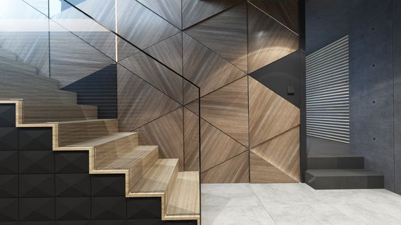

Medienos gaminiai namuose – įprastas pasirinkimas, tad nieko keisto, jog ieškant laiptų daugelis pirmiausia pagalvoja apie medinius.Net ir netradiciniams namams atrasti labiausiai tinkamus medinius laiptus nebus sunku.
Iš medžio gaminami laiptai yra unikalūs savo išvaizda ir kiekvienas gaminys vis kitoks, unikalus ir puikiai derantis prie skirtingo interjero. Dažnas namuose vaikšto basas, tad lipti mediniu paviršiumi bus malonu, o padas nešals. Mediniai gaminiai taip pat sugeria šilumą, tad žiemos metu laiptai bus šilti, jais lipti bus malonu.
Medis taip pat nėra labai slidi medžiaga, tad tokie laiptai bus saugūs. Tai itin aktualu tiems, kurie turi mažus vaikus arba augintinius ir nori juos apsaugoti nuo pavojų tykančių ant laiptų. Mediniai laiptai net ir ką tik išplauti netampa grėsme ir jais galima lipti saugiai.
Laiptų dydis bei forma įprastai yra suderinama su architektu ir įvertinama, koks dizainas dominuoja patalpoje, kurioje montuojami laiptai. Labai svarbu atsižvelgti ne tik į dizainą, tačiau ir patogumą. Laiptų pakopos neturi būt per aukštos ir per siauros. Visas kojos padas turi būti patogiai padedamas, kad net ir greitas lipimas būtų saugumas ir patogus.
Mediniai laiptai – tobulas pasirinkimas lyginant kainą, kokybę bei estetiką! Jie gali būti didžiausia Jūsų namų puošmena ir kuriat jaukumo bei šilumos jausmą namuose.
Mūsų gamintų medinių laiptų nuotraukos:
| ADRESAS: | Paplūdimio g. 5, Inturkė, LT-33212 Molėtų r. |
| TEL: | +37067520267 |
| EL.PAŠTAS: | inturkeslaiptai@gmail.com |
{kind=link}
{kind=link}
{kind=link}
{kind=link}
{kind=link}